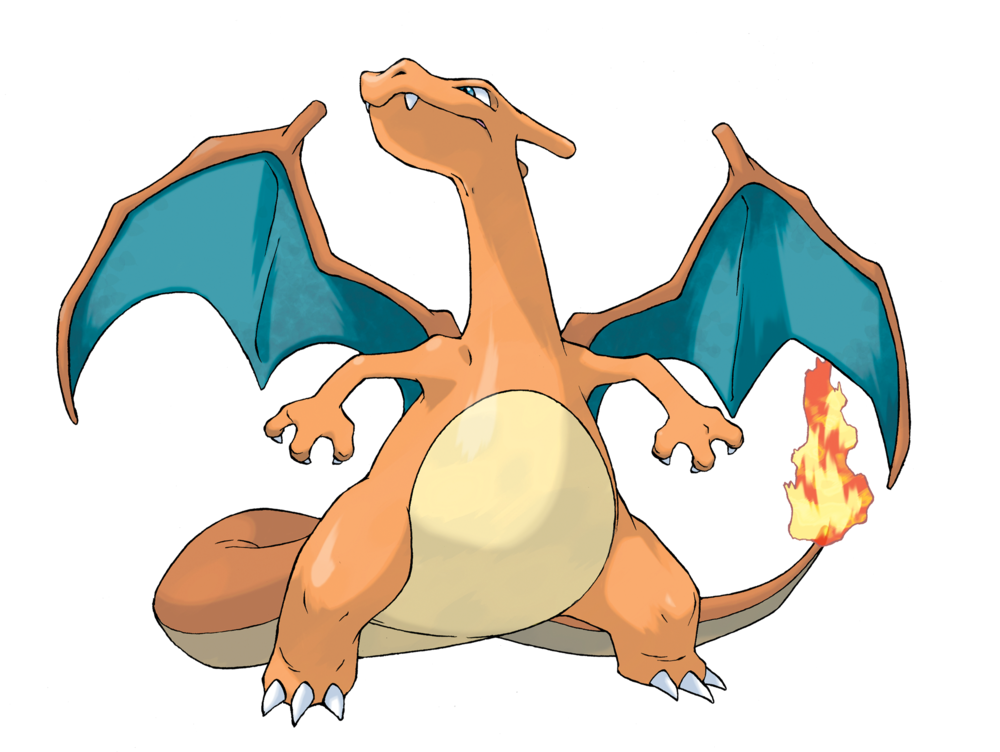

Чармандер англ. Charmander, (Hitokage|ヒトカゲ) — це вигадана істота, покемон. Він належить до першого покоління покемонів і має порядковий номер 004 зі 150 покемонів першого покоління і 729 всіх семи. Його ім'я перекладається як спалююча саламандра (у міфології саламандра - це дух вогню). Уперше він з'являється у відеоіграх компанії Nintendo 1996 року, а також в однойменному мультсеріалі. Франшиза чармандера використана у багатьох карткових іграх та при створенні іграшок і брелоків.
Чармелеон - маленький, двоногий, динозавр-покемон з появою, схожий на свою попередню формуЧармандера. Чарсалеон має більш темний червоний колір шкіри, більше тіло, пазурі, і рогоподібний виступ на задній частині голови, подібний до рогу орнітоподів. Його пазурі гострі як бритва, а хвіст є дуже сильний і розвинений

Чарізард великий дракон-покемон, який значно відрізняється від попередньої еволюційної форми. В нього колір шкіри не червоний, як у Чармелеона, а жовтогарячий як у Чамандера .Тепер в нього два роги по одному з кожної сторони голови. Найбільш помітна різниця між Чарізардом і його попередньою формою є великі крила, які розвинулися на його спині, які дают Чарізарду здатність літати.
